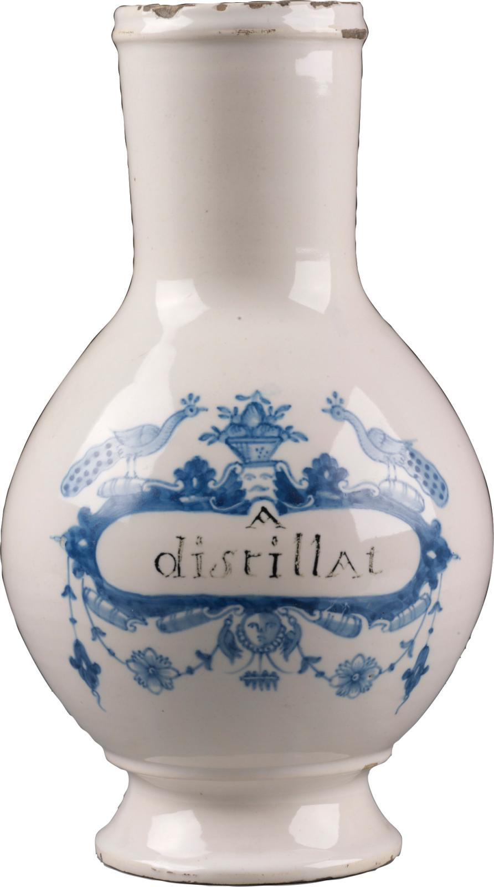
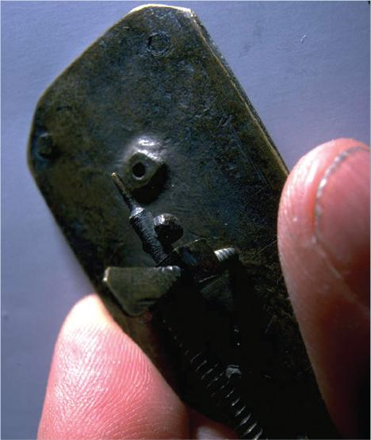
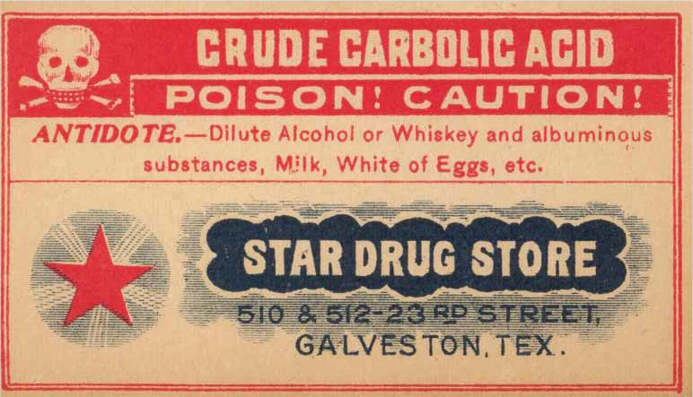
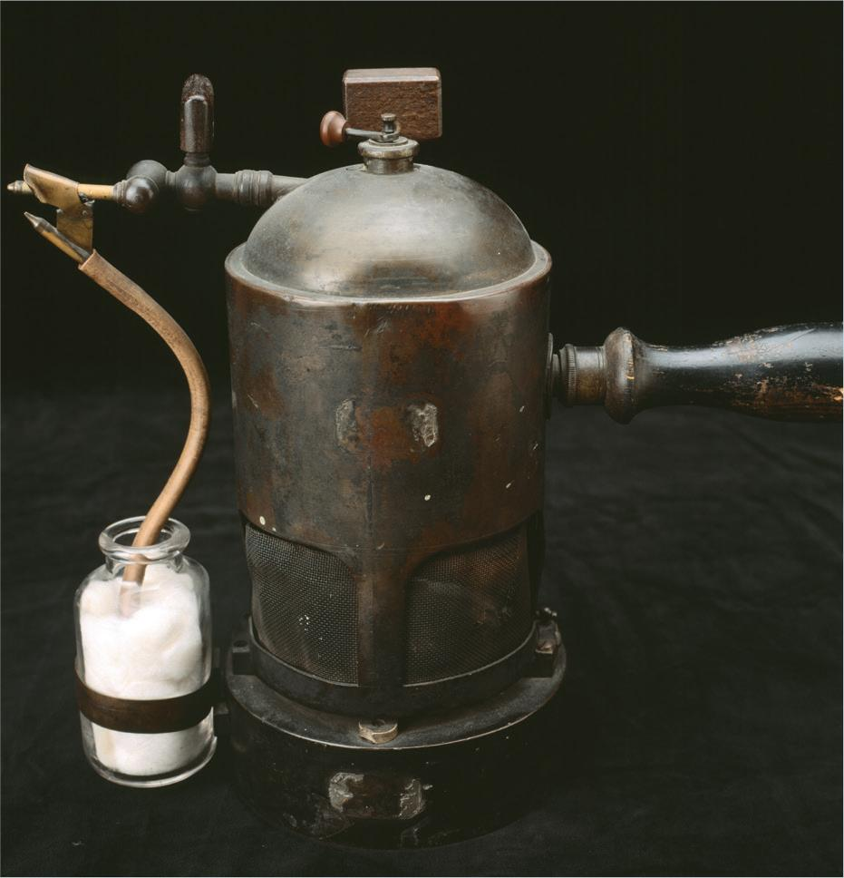

PART 1: CONCEPTS
9.1 Historical Introduction
As discussed in Chapter 8, the process of germ transmission was not fully understood prior to the 19th century. However, archaeological evidence from the sites of early civilizations, such as Mesopotamia, shows that these cultures did implement certain cleanliness and disinfection practices. In fact, ancient Egyptian cultures, guided by their religious doctrines, were fastidious about personal cleanliness. Their notion that cleanliness was next to godliness stemmed from their belief that illness or disease was the mortal punishment from the gods for unholy behavior. Therefore, participating in cleanliness rituals cleansed not only the body but the soul.
Ancient Uses of Essential Oils
As part of their bathing rituals, Egyptian citizens applied essential oils—such as cedarwood, myrrh, cinnamon bark, thyme, clove, palm, eucalyptus, and fir—to ward off infection. Essential oils were thought to cleanse the body, mind, and spirit of toxins, thereby restoring health and well-being. This early healing practice spawned a form of alternative medicine still used today: aromatherapy.
Although these early cleansing practices were limited in effectiveness, they did provide some degree of protection against illness and infection. Recognizing the protective factors, or antiseptic properties, of these oils, ancient Egyptians began to soak bandages in these liquids and apply the poultices to wounds. They also introduced essential oils, as well as vinegar (an organic acid), into body cavities during the embalming process to cleanse the bodies before they laid the cadavers in the sunlight for drying. Their discoveries of the disinfectant properties of acids and drying have been applied in medical practice for centuries.

Antiseptic Properties of Metals
In addition to using plants and tree resins, Egyptians found that metals had antiseptic properties as well. They used copper vessels to purify their drinking water and mercury compounds to treat wounds and to dissipate evil spirits and disease during the mummification process. Early Egyptians also used sulfur to purify the dwellings of individuals and, therefore, prevent contagion.
The use of sulfur can be traced back to Book XII of The Odyssey by Greek poet Homer, recorded in 800
Another metal with antiseptic properties was zinc, which was used by early inhabitants to treat skin disorders and infections. Zinc is still used today in medications that treat diaper rash, chronic wounds, and ulcers.
Fumigation and Other Disinfection Practices
Early Greek and Roman practitioners, such as Hippocrates and Galen, approached illness and disease from a more scientific standpoint than the Egyptians did. Hippocrates dismissed the idea that illness and disease were spiritual curses, believing instead that they were the result of a patient’s lifestyle and surrounding environment. Like his predecessors, Hippocrates recommended the practice of fumigation as a disinfectant, encouraging his fellow citizens to burn herbs in the street to purify the air and ward off disease. He also used herbs (balsam, in particular), the distillate of wine, boiling water, and acetum or vinegar to cleanse wounds. In fact, the potent antibacterial properties of the acid in vinegar, when diluted, continued to be used in the treatment of wounds throughout the 19th century, and it continues today.
Hippocrates’ successor, Galen, reportedly boiled his surgical instruments before tending to the wounds of soldiers, revealing a rudimentary knowledge of the effects of heat sterilization on bacteria and viruses. He also used soap to cleanse the hands.
By the 1st century CE, the practice of fumigation was a standard protocol in the practice of ayurvedic medicine. East Indian shaman Sushruta instructed surgeons to purify the air of their operating rooms with the disinfecting vapors of sulfur, white mustard, bdellium, or neem leaves. He believed that these vapors would sterilize the surgical wound. Sushruta’s directive indicated his keen insight on a connection between airborne contaminants and infection, a notion that was confirmed by subsequent generations.
The disinfectant practice of fumigation continued into the Middle Ages, a time of epidemic plagues and untold deaths. Victims of the plague had their homes fumigated with sulfur and their clothing incinerated in attempts to halt the spreading of the disease. Ironically, personal hygiene was discouraged at this time for it was thought that hot water would open the skin’s pores, allowing disease to creep within the body and reside. The deadly combination of poor personal hygiene, unsanitary disposal of waste, and crowded living conditions contributed to the transmission of disease.
Seminaria and the Spread of Infection
It was not until the 1500s that disease transmission was clearly understood. Italian physician Girolamo Fracastoro (also known as Hieronymus Fracastorius) proposed a theory that infectious diseases could be transmitted by three means: direct contact with an infected person, indirect contact with fomites (clothing or objects belonging to an infected person), or airborne transmission. In his book On Contagion, Contagious Diseases, and Their Treatment, published in 1546, Fracastoro claimed that invisible particles, or seminaria, created by the atmosphere were responsible for the spread of infection among populations. These seminaria were specific to individual diseases, could replicate themselves, and affected the balance of the body’s humors. Fracastoro concluded that seminaria were emitted in the noxious fumes of decaying organic matter, or miasmas, from decomposing cadavers. Still, it would be another 300 years before scientists would prove the existence of seminaria (later named microbes) and refine an understanding of their origin and role in disease transmission.
Various Remedies for Disease Transmission
During the 16th and 17th centuries, with limited knowledge of disease transmission, healthcare practitioners recommended a variety of substances to disinfect objects and purify the air. Some of these disinfectants could be traced back to traditional herbal remedies. Lavender, for example, was considered to be a protectant against infection. As a result, glovemakers began to perfume their gloves with lavender to halt the spread of cholera. Another herb, rosemary, was burned to fumigate hospitals and purify the air.
In addition, acids such as vinegar, wine, and—surprisingly—urine were used as antiseptics for dressing wounds. Alkalis such as soda and lime were used to disinfect surfaces such as public drinking fountains and dwellings. None of these remedies, however, could counteract the effects of poor sanitation and personal hygiene on the transmission of disease.
Leeuwenhoek’s Discovery of a Microculture
In the 17th century, Dutch scientist Antony van Leeuwenhoek’s hand-crafted microscope confirmed what was suspected by many of his scientific predecessors: the presence of a microculture of cells and organisms.

Leeuwenhoek called them animalcules (meaning “little animals”), referring to the idea that these organisms derived from animate life rather than inanimate objects. He carefully observed the movement of protozoa through his crude lenses and described the three types of bacteria as cocci, bacilli, and spirochetes. These classification terms for bacteria are still used today. Leeuwenhoek also made the serendipitous discovery that the animalcules “could not endure the heat of my coffee,” laying the foundation for the use of heat as a method of disinfection. Two hundred years would pass before British surgeon Joseph Lister would establish the relationship between these newly discovered microorganisms and disease transmission.
Chemical Disinfectants and Infection Control
By the 18th and 19th centuries, advances in chemistry provided chemical forms of disinfectants. The discovery of chlorine in 1774 and hypochlorites in 1789 led to their use in the 19th century to treat infectious waste before disposal. These substances also served as disinfecting agents in hospital rooms. Another chemical, iodine, was introduced in 1811 as a cure for goiter, but its antiseptic properties made it a commonly used wound treatment for soldiers during the Civil War.

Phenol (also known as carbolic acid), a disinfectant still used in healthcare facilities today, was discovered in 1834. Initially used as a deodorant for the stench of raw sewage, phenol became more well-known for its antiseptic applications in the treatment of wounds. One proponent for its use in wound treatments was Joseph Lister, who saturated surgical dressings in the chemical before applying them to his patients. He also employed a pump to mist the operative area with the acid. As a result, Lister observed a significant reduction in the mortality rate of his patients.
Lister also understood the importance of disinfecting the room air of the operative environment. He used eucalyptus oil vapors as a fumigant. Eucalyptus oil would later become one of the key ingredients in Listerine, Lister’s namesake product that was originally formulated as a surgical disinfectant.
Institution of Sterile Practices
Lister’s experimental research on disease transmission led to the establishment of sterile practices, including chemical sterilization of surgical instruments and the beginnings of infection control. His research also introduced the healthcare field to a brand-new science: microbiology, or the study of microorganisms.
By 1876, German physician Robert Koch proved that these microorganisms were indeed the causative agents of infectious disease and, before the close of the 19th century, 20 types of bacteria were specifically linked to certain diseases. Confirmation that these microorganisms could be transmitted through direct contact and through the air made healthcare practitioners recognize the importance of creating a sterile environment for surgical procedures. Consequently, German surgeon Ernst von Bergmann was the first physician to use an autoclave to sterilize his surgical instruments using steam rather than chemicals. This steam sterilization method effectively reduced mortality rates among his surgical patients.

Another important advancement in aseptic hospital protocol at the end of the 19th century involved the use of ethyl alcohol also known as ethanol, one of the oldest medicinal treatments that can be traced back to primitive cultures. Alcohol already had a long history as a wound antiseptic, but it was not until 1888 that German physician and professor Paul Fürbringer recognized the benefits of using alcohol to disinfect the hands before a medical procedure. Prior to this discovery, carbolic acid had been used as a skin disinfectant; however, its application had the detrimental side effect of damaging the skin’s underlying tissues. It would take several microbiologists many years to determine the exact concentration and time exposure needed to kill microorganisms on the skin.
Today, alcohol is still being used to sanitize skin in the healthcare environment. The Centers for Disease Control and Prevention (CDC) has published guidelines for Hand Hygiene in Healthcare Settings, which identifies the situations and types of alcohol-based hand rubs recommended for use by healthcare personnel. Frequently, these types of hand sanitizer contain an inert skin emollient that helps to prevent skin irritation.
Modern Applications of Disinfectants
In the 20th century, the use of disinfectants was driven by public health concerns. Hydrogen peroxide, a chemical originally used as a deodorizer, saw new use as a disinfectant of drinking water, as did chlorine, a chemical that was also used as a disinfectant in the food industry. Ammonia compounds and creosol solutions became widely used in both residences and healthcare facilities as a surface disinfectant. Even soaps for personal hygiene advertised their disinfectant properties, with their manufacturers promising consumers increased protection against infectious diseases, a major public health concern at the turn of the century. Surprisingly, these disinfectant soaps contained carbolic acid, a powerful surface disinfectant that was later determined to be a poison and, in its undiluted form, potentially fatal on contact.
The latter half of the 20th century saw an increased use of manufactured disinfectants containing harsh chemicals. This prevalent practice came to the attention of the US Environmental Protection Agency (EPA), whose employees voiced their concerns about the potential environmental and health risks of using these disinfectant products. Consequently, the EPA required that certain surface disinfectants be registered and classified with the agency, a practice that continues today.
In current sterile compounding practices, sterile 70% isopropyl alcohol (IPA) is used to wipe the interior surfaces of the primary engineering control (PEC) used in sterile compounding. A common PEC used in nonhazardous compounding is the horizontal laminar airflow workbench (LAFW), sometimes referred to as a workbench, cabinet, or—more frequently—a hood. Sterile compounding personnel are required to first clean and then disinfect the interior surfaces of the PEC, unless an EPA-registered (or equivalent) disinfectant cleaner that is capable of accomplishing both cleaning and disinfection in one step is used. It is the responsibility of all sterile compounding personnel to understand the use of cleaning and disinfecting agents in a PEC and the importance of this quality assurance practice to patient safety.